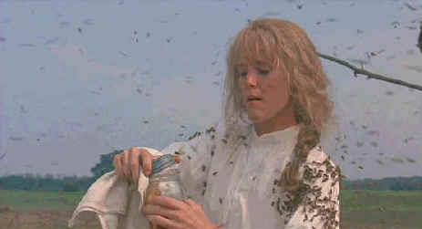

Universal/1991/137m/ANA 1.85
Set in the contemporary suburban Alabama and through flashbacks to a small Alabama town around the now defunct Whistle Stop Cafe some sixty years earlier during the years of the depression, the intertwining of the two stories is executed with intelligent balance. From a novel by Fannie Flagg, this is one of the strongest stories about women that I recall. A tomboy, Idgie Threadgoode finds her life turned around when tragedy strikes her family. Idgie turns so far inward that she practically lives in the woods near her home, but Ruth, an older, more refined young woman touches Idgie and they make a bond that will last a lifetime.
 |
Mary Stuart Masterson in a honey of a perfromance©Universal |
We learn about the Whistle Stop
Café as Ninny Threadgoode relates her memories to Evelyn when the later accompanies her
husband on visits to her mother-in-law at a local nursing home. Ninny's stories of the
past help Evelyn find a new spirit for her own life, echoing the tale told by Idgie of a
simpler time many years before. The visits with Ninny become a important part of Evelyn's
life .
The period story dominates Fried Green Tomatoes with its
wonderful detail the colorful characters that inhabit the world around the Whistle Stop
Café. The focus is drama in this section of the film, while the bright and unending
cheeriness of the contemporary section provides a great deal more comedy.
The screen relationships of the actresses are truly remarkable.
Mary Stuart Masterson is wonderful as Idgie. Her snappy persona gives Idgie enough spirit
for four or five central screen women. Mary-Louise Parker imbues Ruth with a rare warmth
and practicality that compliments the marvelous energy of Masterson. Jessica Tandy brings
the wisdom of her years as Ninny Threadgoode. Tandy's delivers her lines with a wonderful
sense of humor. Evelyn, played by Kathy Bates, is a hungry audience and together these
pairs of women make marvelous cornerstones for this grand film.
Jon Avnet's direction is crisp and dedicated to bringing the
story to the forefront. The filming is bright and illuminating. Avnet builds a rare spirit
to this film and it's obvious from the performances he extracts from all his actors.
Fried Green Tomatoes is shot with the same vitality that
director Avnet has imbued the story. Rich colors evoke the warmth of friendship. Both
periods are shot with a similar feel, laying emotions on the table as casually as dressing
Southern Sunday dinner table. Geoffrey Simpson's camera records everything with great
beauty. The camera moves elegantly and unobtrusively.
This is a beautiful DVD. The immediacy of the story is
communicated in sharp images and handsome colors. The anamorphic transfer spreads out
before its viewers a veritable cornucopia of life insights. Color depth is outstanding.
Night scenes have a theatrical pop and contrast range consistently dynamic. The haunting
score of Thomas Newman is proudly showcased by the Dolby Digital 2-channel recording.
The documentary made for the special edition contains more
interview time with the people you care about than typical features of this kind. Avnet
appropriately dominates screen time, but there’s a generous helping of Mary Stuart
Masterson and Mary Louise Parker, as well commentary from Jessica Tandy(likely made during
the shoot)and Kathy Bates. The ladies focus mostly on their characters and their part of
the film. There are many insights about the filmmaking process and a fascinating tour with
Avnet of the set which became a tourist attraction in Georgia. If the excellent
documentary isn't enough, Avnet provides a running commentary on a second audio track.